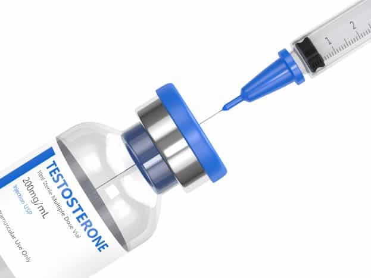

ကျားဟော်မုန်းဆေးရည် ထိုးသွင်းခြင်းအကြောင်း လေ့လာကြမယ်

ဒီဆေးနဲ့ပတ်သက်ပြီး မပြောခင် ကျားဟော်မုန်းအကြောင်းကို အနည်းငယ်ရှင်းပြပေးချင်ပါတယ်။ ကျားဟော်မုန်းကို တက်စတိုစတီရုန်းဟော်မုန်း (Testosterone) သို့မဟုတ် အန်ဒရိုဂျင်ဟော်မုန်း (Androgen) လို့လည်း ခေါ်ကြပါတယ်။ အဓိက အမျိုးသားတို့ရဲ့ ကိုယ်ခန္ဓာကြီးထွားဖွံ့ဖြိုးမှု၊ လိင်ပိုင်းဆိုင်ရာ စွမ်းဆောင်မှုနဲ့ မျိုးပွားနိုင်စွမ်းအပေါ် အကျိုးသက်ရောက်မှုများစွာ ဖြစ်စေပါတယ်။
ယောက်ျားလေးဖြစ်ဖြစ်၊ မိန်းကလေးဖြစ်ဖြစ် ကိုယ်ခန္ဓာမှာ ရှိသင့်ရှိထိုက်တဲ့ ကျားဟော်မုန်းပမာဏတစ်ခုရှိပါတယ်။ ဒီပမာဏထက် နည်းသွားတဲ့အခါဖြစ်စေ၊ များလွန်းနေတဲ့အခါဖြစ်စေ ဟော်မုန်းမျှခြေပျက်စီးခြင်း (Hormone Imbalance) လို့ ခေါ်ပါတယ်။ ဒီလို ဟော်မုန်းပမာဏတွေ ကမောက်ကမဖြစ်လာတဲ့အခါ အမျိုးသားတွေမှာ လိင်စိတ်ဆန္ဒလျော့နည်းလာမယ်၊ လိင်တံနဲ့ ဝှေးစေ့အရွယ်အစား အနည်းငယ်သေးသွားမယ်၊ လိင်တံမထောင်မတ်နိုင်ခြင်း၊ ပန်းသေပန်းညှိုးဖြစ်ခြင်း၊ သုက်လွှတ်မြန်ခြင်း၊ ကြွက်သားထုနည်းသွားပြီး ပိန်လှီလာခြင်း၊ အဆီတက်လွန်ပြီး အဝလွန်ခြင်း၊ စိတ်ဓာတ်ကျခြင်း၊ စိတ်အာရုံစုစည်းမရခြင်းတို့ ဖြစ်တတ်ပါတယ်။
ဘယ်လိုအခြေအနေမှာ ဆရာဝန်နဲ့ ပြသဖို့လိုအပ်လာပြီလဲ။
အထက်မှာ ပြောပြခဲ့တဲ့ လက္ခဏာတွေ တော်တော်များများကို တွေ့ရတယ်၊ ဒီလက္ခဏာတွေကြောင့် ကိုယ့်ရဲ့ နေ့စဉ်ဘဝ၊ စိတ်ကျန်းမာရေး၊ လုပ်ငန်းခွင်နဲ့ လိင်မှုကိစ္စမှာ အခက်အခဲတွေ ဖြစ်လာပြီဆိုရင် အမျိုးသားရောဂါကုဆေးခန်းတွေမှာ ဆရာဝန်နဲ့ အမြန်ဆုံးပြပြီး စစ်ဆေးကြည့်သင့်ပါတယ်။ ဆရာဝန်အနေနဲ့ လူနာရဲ့ စိတ်နဲ့ ခန္ဓာကျန်းမာရေး၊ စားသောက်နေထိုင်မှုပုံစံ၊ အာဟာရမျှတမှုရှိမရှိ၊ ရောဂါတွေ၊ သောက်နေတဲ့ ဆေးဝါးတွေအကြောင်းကို အရင်ဆုံးမေးမြန်းမှာ ဖြစ်ပါတယ်။ ပြီးမှ လူနာရဲ့ လိင်အင်္ဂါကို အနီးကပ်ကိုင်တွယ်စစ်ဆေးပြီး ကျားဟော်မုန်းပမာဏကို စစ်ဆေးမှာ ဖြစ်ပါတယ်။
ကျားဟော်မုန်းပမာဏက အမျိုးသားတစ်ယောက်အတွက် သတ်မှတ်ထားတဲ့ ပမာဏ (300-1000 ng/dL) အောက် အလွန်နည်းနေတယ်ဆိုတဲ့ ဆေးစစ်ချက်အဖြေ ထွက်လာပြီဆိုမှသာ ကျားဟော်မုန်းအစားထိုးကုထုံးဖြင့် စတင်ကုသမှုခံယူဖို့ အကြံပေးမှာဖြစ်ပါတယ်။ ဒီကုထုံးတွေမှာ
• ကျားဟော်မုန်း ဂျယ်လ်လိမ်းခြင်း
• ကျားဟော်မုန်းဆေးရည် ကပ်ခွာကပ်ခြင်း
• ကျားဟော်မုန်း ဆေးရည်ထိုးသွင်းခြင်း ကုထုံးတွေ ပါဝင်ပါတယ်။
ဒီကုထုံးတွေမှာ ဂျယ်လ်လိမ်းခြင်းနဲ့ ကပ်ခွာကပ်ခြင်းတို့သည် အန္တရာယ်အကင်းဆုံးလို့ ယူဆလို့ရပြီး ဆေးရည်ထိုးသွင်းတဲ့ကုထုံးကတော့ အနည်းငယ် ဘေးထွက်ဆိုးကျိုးရှိနိုင်တဲ့အတွက် ဒီနေ့ဆောင်းပါးမှာ ဒီကုထုံးနဲ့ပတ်သက်ပြီး သိထားသင့်တာလေးတွေကို ဝေမျှပေးသွားမှာ ဖြစ်ပါတယ်။
ကျားဟော်မုန်းဆေးရည်ထိုးသွင်းခြင်း (Testosterone Injection)
ဒီဆေးရည်ကို ဆရာဝန်ရဲ့ ခွင့်ပြုချက်ဖြင့်သာ ထိုးသွင်းသင့်ပါတယ်။ အပြင်ဆေးဆိုင်တွေမှာလည်း ဆေးရောင်းတာမျိုး သိပ်မရှိသလို ကိုယ့်သဘောနဲ့ ကိုယ်ထိုးတာမျိုးလည်း မလုပ်သင့်ပါဘူး။ ကျားဟော်မုန်း တော်တော့်ကို နည်းလွန်းနေတဲ့ အခြေအနေ၊ ဒါမှမဟုတ် အသက် ၄၀ နောက်ပိုင်း အသက်ကြီးတဲ့ အရွယ် အမျိုးသားတွေကိုသာ ဆရာဝန်က ဒီဆေးရည်ထိုးသွင်းဖို့ အကြံပေးပါလိမ့်မယ်။
ဆေးရည်ထိုးသွင်းခြင်းမပြုခင်မှာ ဆရာဝန်အနေနဲ့ လူနာရဲ့ သွေးနီဆဲလ်အရေအတွက်ကိုလည်း စစ်ပါလိမ့်မယ်။ အကြောင်းရင်းကတော့ ဒီကျားဟော်မုန်း တိုးစေတဲ့ ဆေးရည်ထိုးသွင်းတဲ့အခါ လူနာအနေနဲ့ ပုံမှန်ထက် သွေးနီဆဲလ်အရေအတွက် များသွားနိုင်တာကြောင့် ကိုယ်ခန္ဓာအတွက် တခြားဘေးထွက်ဆိုးကျိုးု ကြီးကြီးမားမား မဖြစ်စေဖို့ စစ်ဆေးရတာပဲဖြစ်ပါတယ်။
ဆရာဝန်က ဆေးထိုးတော့မယ်ဆိုရင် တင်ပါးမှာရှိတဲ့ တင်ပါးကြွက်သားအတွင်းကို ထိုးသွင်းတာဖြစ်ပြီး နောက်ပိုင်းမှာတော့ ဆရာဝန်ဆေးပေးလိုက်ပြီး ကိုယ့်ဘာသာအိမ်မှာ ထိုးမယ်ဆိုရင်တော့ ပေါင်မှာရှိတဲ့ ကြွက်သားတွေကို ကိုယ်တိုင်ဆေးရည်ထိုးသွင်းတာမျိုးတွေလည်း ရှိပါတယ်။
ဒီဆေးရည်ကို ထိုးသွင်းနေစဉ်နဲ့ ထိုးသွင်းပြီး နာရီဝက်အတွင်းမှာ လူနာအနေနဲ့ အသက်ရှူကြပ်တဲ့ ပြဿနာတွေ၊ ဓာတ်မတည့်တဲ့ လက္ခဏာတော်တော်များများကို ပြတတ်ပါတယ်။ ဒါကြောင့် လူနာအနေနဲ့ ဆေးရည်ထိုးသွင်းပြီးတာနဲ့ ဆေးရုံမှာ ခဏအနားယူဖို့လိုအပ်ပြီး ချက်ချင်းထပြန်တာမျိုးတော့ လုပ်လို့မရပါဘူး။ ဆရာဝန် သို့မဟုတ် ကျန်းမာရေးစောင့်ရှောက်ပေးသူက အဆင်ပြေပြီလို့ သတ်မှတ်လို့ရတဲ့ အနေအထားရောက်မှသာ လူနာကို ပြန်လွှတ်ပေးမှာဖြစ်ပါတယ်။ အဖြစ်များတဲ့ ဓာတ်မတည့်တဲ့ လက္ခဏာတွေကတော့
• လည်ချောင်းထဲမှာ ကျပ်ပြီး အသက်ရှူမဝသလို ခံစားရခြင်း
• အစာ၊ ရေ မျိုချလို့မရခြင်း
• အသက်ရှူကျပ်ခြင်း
• ချောင်းဆိုးခြင်း
• ရင်ဘတ်က အောင့်နေခြင်း
• ခေါင်းမူးဝေနေခြင်း
• အော့အန်ခြင်း
• ချွေးစေပြန်ခြင်း
• အနီဖု၊ အင်ပျဉ်ထခြင်း
• ခန္ဓာကိုယ်အနှံ့ ယားယံခြင်းတို့ ဖြစ်ပြီး ဒီလက္ခဏာတွေကို ကိုယ်ပြသနေတဲ့ ဆရာဝန်နဲ့ သေချာ ပွင့်ပွင့်လင်းလင်း ပြောပြထားဖို့ လိုအပ်ပါတယ်။
နောက်ထပ်ဘေးထွက်ဆိုးကျိုးအနေနဲ့ အသည်းနဲ့ နှလုံးထိခိုက်ခြင်း၊ သွေးခဲခြင်း၊ ဆီးကျိတ်ကြီးခြင်းအန္တရာယ်တွေတော့ ဖြစ်နိုင်ခြေပိုများလာနိုင်ပါတယ်။
ဒီဆေးရည်ဟာ ခန္ဓာကိုယ်ရဲ့ ကျားဟော်မုန်းထုတ်လွှတ်တဲ့ ပမာဏကို တိုးမြှင့်ပေးပြီး ဟော်မုန်းတွေကို ကိုယ်ခန္ဓာရဲ့ နေရာအနှံ့လှည့်လည်ပို့ဆောင်ပေးတဲ့နေရာမှာလည်း ကူညီပေးပါတယ်။ အထူးသဖြင့် ကျားဟော်မုန်းနည်းလွန်းတဲ့ အမျိုးသားတွေ ဆေးရည်ထိုးသွင်းပြီးနောက်မှာ
• လိင်စိတ်ဆန္ဒ တိုးလာခြင်း
• အိမ်ထောင်ရေးသုခ ပိုမိုပြည့်စုံလာခြင်း
• လိင်တံကောင်းစွာ ထောင်မတ်နိုင်ခြင်း
• သက်လုံကောင်းပြီး လိင်ဆက်ဆံတဲ့အခါ ပိုမိုခွန်အားစိုက်ထုတ်နိုင်ခြင်း
• စိတ်ပျော်ရွှင်ပြီး စိတ်ကြည်လင်လန်းဆန်းလာခြင်း
• သုက်ပိုးကောင်ရေ တိုးလာခြင်း
• ကြွက်သားထုတက်လာခြင်း
• ကိုယ်ခန္ဓာမှာရှိတဲ့ အဆီပိုတွေ ကျခြင်း စတဲ့ ပြောင်းလဲမှုတွေကို တွေ့ရမှာဖြစ်ပါတယ်။
ကျန်တဲ့ ကုထုံးတွေနဲ့ယှဉ်လိုက်ရင် ကျားဟော်မုန်းဆေးရည်ထိုးသွင်းခြင်းဟာ ကုန်ကျစရိတ် အနည်းငယ်ပိုများနိုင်ပြီး ၂ပတ်မှ ၄ပတ်အတွင်း တစ်ကြိမ် ပုံမှန်ဆေးရည်ထိုးဖို့ လိုအပ်ပါတယ်။ ဆေးထိုးဖို့ ရက်ချိန်းကိုတော့ ဆရာဝန်ကိုယ်တိုင် သတ်မှတ်ပေးမှာဖြစ်ပြီး အဲ့ဒီရက်ချိန်းအတိုင်း မပျက်မကွက်ပြဖို့လိုအပ်ပါတယ်။ ဒီကုထုံးတွေက နှစ်ပေါင်းများစွာ ကြာရှည်ကုသဖို့ လိုအပ်ပြီး သေချာစိတ်ရှည်ပြီး ကုသမှုခံယူဖို့နဲ့ အိမ်တွင်းနည်းလမ်းအနေနဲ့ အိပ်ရေးဝအောင်အိပ်ဖို့၊ အစာအာဟာရ ပြည့်ဝစွာ စားသုံးဖို့၊ လေ့ကျင့်ခန်းလုပ်ဖို့လည်း လိုအပ်တယ်ဆိုတာ ထပ်ဆောင်းအကြံပေးလိုက်ချင်ပါတယ်။
အားလုံးပဲ ကျန်းမာပျော်ရွှင်ပြီး စိတ်ချမ်းမြေ့စရာကောင်းတဲ့နေ့ရက်တွေကို ပိုင်ဆိုင်ရပါစေလို့ ဆုတောင်းပေးရင်း ဒီမှာပဲ နိဂုံးချုပ်လိုက်ပါတယ်။
Source-Ye Myo Myat